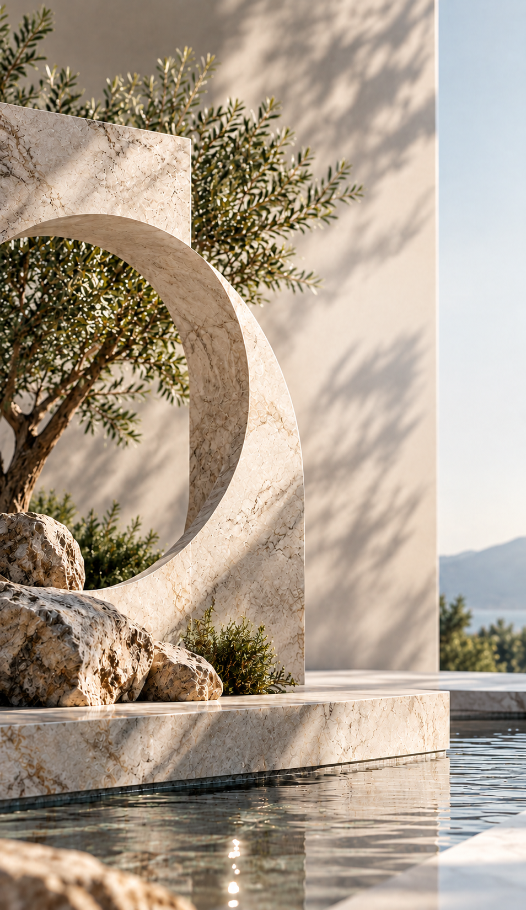

HAKKIMIZDA
Yaşam Alanlarına
Değer Katan
Doğal Taşlar
Doğanın eşsiz dokusunu estetikle buluşturan doğal taşlar, tasarımda sınırları ortadan kaldırarak hayal gücüne yeni bir boyut kazandırır.
Kendine özgü renkleri, benzersiz desenleri ve zamansız zarafetiyle yaşam alanlarına estetik bir kimlik kazandırırken, dayanıklı yapısıyla uzun yıllar değerini korur.
Doğadan ilham alan her detay, mekânlara yalnızca güzellik değil; prestij, güven ve kalıcı bir değer katar.
Geniş Ürün Yelpazesi,
Güçlü Sektörel
Deneyim
Bekamar, zengin ürün portföyü, seçkin koleksiyonları ve geniş renk ve doku seçenekleriyle mimari projelere estetik ve işlevsel çözümler sunmaktadır. Başta Ege Bölgesi olmak üzere çevre il ve bölgelerde, mimarlık ve tasarım sektörünün değişen ihtiyaçlarına yenilikçi yaklaşımıyla yanıt vermektedir.
Sektörel bilgi birikimini, uzman kadrosunu ve müşteri odaklı hizmet anlayışını bir araya getiren Bekamar, kaliteyi ve güvenilirliği tüm süreçlerinin merkezinde konumlandırmaktadır. Müşteri memnuniyetini öncelik olarak benimseyen marka, insan kaynağına yaptığı yatırımlarla hizmet kalitesini sürekli geliştirmekte ve sektördeki konumunu güçlendirmektedir.
Kurumsal değerlerinden ödün vermeden gelişimini sürdüren Bekamar, yenilikçi vizyonu, güçlü iş ortaklıkları ve sürdürülebilir büyüme hedefleri doğrultusunda geleceğe güvenle ilerlemektedir.
